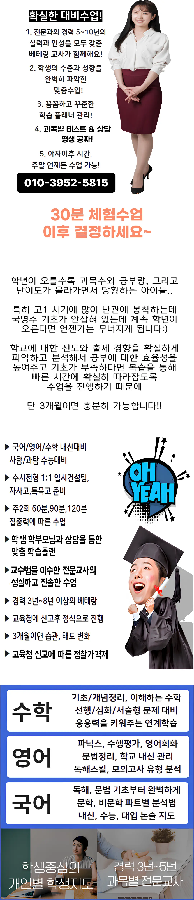

첫 번째로 교육기관의 교육 철학이 우리 아이와 맞는지 살펴보는 것이 중요해요. 다음으로 강사의 전문성과 실제 가르친 경험을 확인하는 과정이 필요해요. 또 다른 고려 사항은 해당 시설의 위치와 수업 시간표가 일상 생활과 얼마나 조화를 이루는지인데, 특히 영등포동처럼 주거 밀집 지역에서는 이동 거리와 교통 편의성이 큰 영향을 미쳐요. 예를 들어 주변에 같은 연령대 학생들이 많이 다니는 곳이라면 학습 분위기가 자연스럽게 형성돼요. 또한 체험 수업을 직접 경험해 보면 강사의 피드백 방식과 학습 자료가 아이에게 맞는지 판단할 수 있어요. 추가로 영등포동 초등 과외에서 제공하는 학부모 상담 시간은 교육 방향을 함께 논의할 수 있는 좋은 기회가 돼요. 마지막으로 수강료 구조와 환불 정책을 미리 확인해 두면 불필요한 비용 부담을 예방할 수 있어요. 이 모든 요소를 종합적으로 고려하면 아이에게 가장 알맞은 교육 환경을 선택하는 데 큰 도움이 돼요.
첫째, 이 지역은 아파트와 단독 주택이 조화롭게 어우러져 가족 친화적인 분위기가 형성돼요. 다음으로, 인근 초중고등학교가 고르게 배치돼 있어 학부모가 학교 선택에 부담을 덜 수 있어요. 또한, 주변에 다양한 교육기관이 모여 있어 선택 폭이 넓어져요. 특히, 주민들이 학습 환경을 서로 공유하며 격려하는 문화가 살아 있어요. 마지막으로, 영등포동은 교통이 편리하고 공원과 문화 시설이 가까워 학습 스트레스를 완화시키는 데 도움이 돼요. 이렇게 지역적 특성을 고려하면 효율적인 학습 계획을 세울 수 있어요.
이곳은 시간 단위 계획과 피드백 조합을 활용해 아이가 며칠을 어떻게 보냈는지 꼼꼼하게 챙겨주는 곳이에요. 타 영등포동 초등 과외이 교재 한 권으로 수업할 때, 우리는 다양한 자료로 보강하여 목표 달성을 위한 집중력 향상 훈련을 할 수 있도록 도와주거든요. 특히 바이올린 수업처럼 기본기를 탄탄하게 다지는 커리큘럼이 자랑이에요. 수강료는 바이올린 고급 과정이 십팔만 원, 중급 과정이 십육만 원으로 책정되어 있어 형편에 맞게 선택할 수 있어요. 아이가 스스로 공부할 힘을 기르고 싶다면 영등포동 초등 과외가 정말 추천이에요.
| 과외명 | 와와학습코칭과외 |
| 수강료 | 바이올린(고급) 180,000원 | 바이올린(중급)A 160,000원 |
CURRICULUM
커리큘럼은 매주 오답 프린트를 제공하고, 개별 풀이 시간을 확보해 학습 결함을 정확히 파악해요. 진도표를 기반으로 진행 상황을 시각화해 학부모와 학생 모두 안심할 수 있게 돕고, 단계별 목표 달성을 위한 피드백을 즉시 제공해요. 복소수 개념 도입 단계에서는 선행 개념 점검을 통해 이해도를 높이고, 핵심 용어 앞에 강조 표시를 붙여 집중을 유도해요. 전체 과정은 반복 학습과 점진적 난이도 상승을 원칙으로 설계돼 있어요.
학생들이 흔히 저지르는 실수는 크게 세 단계에서 나타나요. 첫 번째는 영등포동 초등 과외 선택 초기 단계에서 복습 우선구간을 구분하지 않아 균형 잡힌 학습 계획을 세우지 못하는 경우입니다. 두 번째는 등록 후 진행 중에 목표 설정이 흐려져 불필요한 과목에 과도한 시간을 투자하는 상황이며, 세 번째는 학습 관리 단계에서 에너지 관리 요소를 간과해 피로 누적으로 집중력이 저하되는 문제가 발생합니다. 각 단계별로 체크리스트를 활용하면 이러한 오류를 미연에 방지할 수 있습니다.
이 영등포동 초등 과외은 지역 내 학습 공백을 해소하기 위해 설립되었어요. 피크 타임에는 아이의 머리가 맑을 때 핵심 개념을 배치하고, 하강 타임에는 반복 과제를 적용하여 효율을 극대화해요. 선택에 자신감을 갖게 된 계기로는 영어 듣기 실수가 다섯 개에서 영 개로 줄어든 반복 파일 훈련 효과가 있어요. 모르는 개념은 바로 정리하고 넘어가는 습관을 들여주는 것이 전략의 핵심이랍니다.
고등학교 2학년으로 자기 주도 학습에 어려움을 느끼는 학생에게 적합해요. 필기 능력은 뛰어나지만 점검 습관이 부족한 경우에 도움이 돼요. 학습 동기가 상황에 따라 변동하는 이들에게 꾸준한 관리가 필요해요. 목표가 명확하지만 실행 단계에서 막히는 경우에도 효과를 볼 수 있어요. 개인 맞춤 피드백을 통해 학습 습관을 체계화하고 싶다면 권장해요.
한 학생은 매주 제공되는 개인별 오답 정리집이 시험 대비에 큰 도움이 됐다고 말했어요. 또 다른 학부모는 자녀와 함께 상담을 진행하면서 영등포동 초등 과외의 세심한 관리에 안도감을 느꼈다고 전했어요. 수업 중 강사의 책임감 있는 설명이 신뢰를 주었고, 집중 수업 시간에 주변 친구의 긍정적인 자극도 큰 동기 부여가 되었어요. 마지막으로 복습 영상 덕분에 집에서도 효율적으로 복습할 수 있었다는 점을 높게 평가했어요.